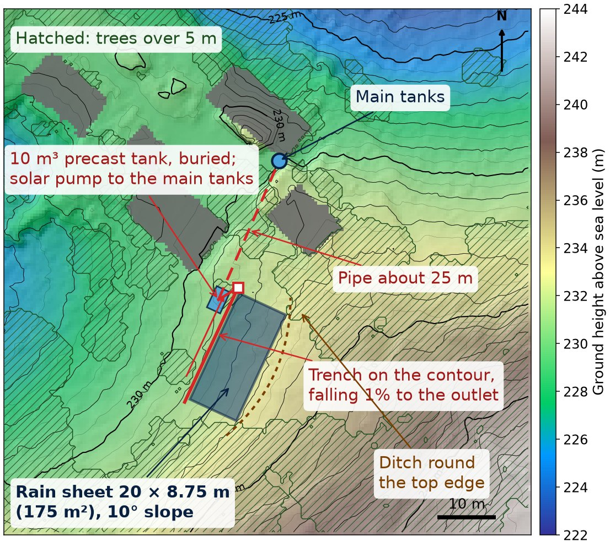

An off-grid house near Prayssac (Lot, France) runs entirely on rain collected from its roofs. This page checks, day by day, whether its tanks can supply guests through the summer, using the rain that actually fell. The recommended fix is a rain sheet on the slope next to the house.
Feel free to change anything below: it all recalculates automatically and this answer updates.
Calculating…
The house runs short because its roofs catch too little rain. With the house full all summer they can't even refill the tanks over winter, so each summer starts with the tanks part-empty, and summer showers add little. So the answer is more collecting surface. The simplest, cheapest and lowest-risk way to get it is one rubber (EPDM) sheet, about 20 × 8.75 m (175 m²), laid on the open slope of grass and low scrub just south of the buildings, draining into a 10 m³ buried tank at the end of its collection trench. The tank is what keeps the sheet this small: it holds the sheet's water from storms that come when the main tanks are already full, and without it the sheet would need to be about 230 m² for the same result. A standard precast concrete rainwater tank does the job; concrete releases nothing harmful into the water. A small solar pump moves its water into the existing underground tanks whenever they have room. If the main tanks turn out to hold about 10 m³ more than estimated, they do the same job and the extra tank isn't needed, so measure them first.
It's sized so that no tanker would have been needed in any summer since 2010. A summer as dry as 2009, the driest since 1994, would need one or two tankers; it's not worth a bigger sheet for that, and the sheet can be extended later if very dry summers become more common. A bigger buried tank lets the sheet shrink a little further.
Calculating…

With the default settings: 8 guests from May to October, 120 litres each a day, every summer since 2010. Worked out on 18 October 2026; the box above is recalculated live.
| Option | Upfront cost | Tanker deliveries a summer | Risk and hassle |
|---|---|---|---|
| As now, with tankers | None | 6.5 (about €1,800 a year) | Depends on finding a haulier and a legal filling point; in a drought, towns compete for the same lorries. |
| Rain sheet 20 × 8.75 m (175 m²) with a 10 m³ buried tank | About €7,000–13,000 | 0 (lowest the tanks got: about 12 m³, in 2011; a summer like 2009 would need 1–2) | Proven method, about a week's work with a small digger, gravity-fed. Ask the mairie first; work in autumn or winter. The sheet lasts 20–40 years. |
| The same sheet and tank, plus dual-flush toilets | As above, plus a few hundred euros | 0 (lowest: about 26 m³, even in 2009) | A large safety margin, even in the driest summer. |
| A bigger sheet instead of the tank (about 230 m²) | Less | 0 (a summer like 2009 would need 1) | A third more sheet to look at. |
| Smaller sheet (about 105 m²), no tank, with dual-flush toilets | Less than the main option, plus the toilets | 0 (a summer like 2009 would need 1) | The smallest sheet, if the toilets are changed. |
| Dual-flush toilets alone | A few hundred euros | 3.7 | Cheap and worth doing, but not enough on its own. |
| Yoga building roof as well | Gutters and a pipe | 4.6 | Easy, but on its own it isn't enough. |
| Shower water reused to flush toilets | Replumbing (not costed) | 1.0 (0 with the yoga roof) | Works, but needs new pipework and a declaration to the authorities. |
| 200 m³ more tank space | High | 6.3 | Barely helps: the roofs don't collect enough to fill the tanks there are now. |
| Borehole | About €20,000 if the first hole finds water; €29,000–33,000 if it doesn't; plus €5,000–9,000 for the pump | 0, if it works | Water could be 110 m down or much deeper. Roughly a 1 in 5 chance the first hole is dry (see below). |
| Air-to-water machines | €1,000s per unit | No real change | 12–20 litres a day each: enough for drinking water, nowhere near enough for showers. |
Ruled out: a mains connection (the nearest main is about 800 m away and 50 m lower), taking water from the Lot (far away and far below the house), and an open pond (summer evaporation of about 4 mm a day would lose almost as much as the guests use).
Heights are from the IGN LiDAR HD survey (geoservices.ign.fr/lidarhd), tiles 0557_6382 and 0558_6382, flown 11 April 2022.
Upkeep: sweep or blow off leaves before May and after summer storms, clean the leaf filter, and check the sheet once a year. Small tears are patched like a bicycle tyre.
Why EPDM. It's heavy enough that the wind doesn't lift it, lies flat on uneven ground, comes in one piece at this size so there's nothing to weld, and lasts 20–40 years in the sun. HDPE plastic is cheaper but stiff and wrinkles in the heat; PVC liners go brittle in sunlight within about 10 years. Rigid roofing sheets on a frame would last as long but cost about €6,000–10,000, catch the wind, show from further away, and count as a building, which this zone of the local plan doesn't allow at that size.
Why a tank. A storm that arrives when the main tanks are already full would otherwise run off the sheet and be lost. The extra tank holds that water and passes it to the main tanks as they empty. That's what lets the sheet be 175 m² instead of about 230 m² for the same result. A bigger tank lets the sheet shrink a little more, but the gain tails off quickly:
| Extra tank for the sheet | Sheet needed | Example size |
|---|---|---|
| None | about 230 m² | 20 × 11.5 m |
| 10 m³ | 175 m² | 20 × 8.75 m |
| 20 m³ | 170 m² | 20 × 8.5 m |
| 30 m³ | 160 m² | 20 × 8 m |
| 50 m³ | 155–160 m² | 20 × 8 m |
Same result in each row: no tanker in any summer since 2010, and one or two in a summer as dry as 2009. The simulator models the tank as filled only by the sheet and emptying into the main tanks whenever they have room.
The trade-off between tank and sheet. More storage lets the sheet shrink a little, but only a little. Below about 155–175 m², storage can't make up for it: the sheet's area is what brings water in during the summer, and with too little of it the longer record shows tankers in several dry summers however big the tanks are. So plan on about 175 m² of sheet. The tank question is only how to provide enough storage in total.
What matters is the total storage, not where it sits. A cubic metre in the main tanks is worth at least as much as one in the extra tank, because the main tanks also take the roof water. The page assumes the two main tanks, the house tank and the solar building tank, are 4 × 4 × 4 m each with 90% usable, which is 115 m³. That's an estimate: they haven't been measured, and the answer depends on it. With the 175 m² sheet feeding the main tanks directly, about 120–124 m³ of usable storage does the job of the extra tank:
| Usable storage in the main tanks | Their full size, if 90% is usable | Tankers since 2010 | Tankers since 1994 |
|---|---|---|---|
| 115 m³ (current estimate) | 128 m³ | 2 | 5 |
| 120 m³ | 133 m³ | 0 | 2, both in 2009 |
| 124 m³ | 138 m³ | 0 (lowest about 15 m³) | 1, in 2009 |
| 130 m³ | 144 m³ | 0 | 1, in 2009 |
So measure them before building anything. In each tank: the inside length and width, the depth from the floor to the overflow pipe, and the height of the pump intake above the floor (water below it can't be used). Usable volume = length × width × (overflow height − intake height). If the two together come to about 124 m³ or more, skip the extra tank. If they come up short, the extra tank only has to make up the difference. Small differences add up: an extra 25 cm of depth across both tanks is about 8 m³.
To check it in the simulator: enter the measured sizes under Tanks, set Usable share of the tank volume under Tanks in detail, tick the ground sheet, untick "Extra tank (sheet only)", and set Start from the year to 1994.
Size of the extra tank. It needs to hold x = 124 m³ minus the usable storage in the main tanks: 10 m³ with the current estimate of 115 m³. Buy one a little bigger than x, as the bottom and top of any tank can't be used, and round up to the next standard size.
It only empties when the main tanks have room. A float switch in the main tanks runs the pump only while there's room in them; otherwise the extra tank keeps its water. When both are full, the extra tank overflows onto the slope below. If a low, wide tank fits between the trench outlet (about 231 m) and the main tanks' inlet (about 229.3 m), gravity can replace the pump, with a float valve at the main tanks doing the same job as the float switch.
What to build it from:
Whatever it's made of, it must be closed and dark, with fine insect mesh on the vents and overflow: open standing water evaporates and breeds mosquitoes.
| Item | Rough cost |
|---|---|
| EPDM sheet in one piece, a standard 12.2 × 21.35 m panel (about 260 m², 1.14–1.2 mm thick), allowing for the trenches | €2,300–3,400 |
| Geotextile underlay, about 260 m² | €300–500 |
| 10 m³ precast concrete tank, drinking-water certified, delivered and lifted in | €2,500–5,000 |
| Small solar pump and float switch | €300–800 |
| Leaf screen, leaf filter and about 25 m of pipe | €400–800 |
| Fence against wild boar and deer | €500–1,000 |
| Small digger with driver, 1–2 days: clearing, the tank hole and the deep stretch of pipe trench | €600–1,500 |
| Total | €7,000–13,000 |
For scale, a US supplier lists a one-piece sheet of 15.25 × 21.35 m (50 × 70 ft), a little bigger than needed here, for $3,500, weighing about 475 kg (Just Pond Liners). Sheets this large in one piece are routine: Elevate (formerly Firestone) makes them up to 36 m wide, and Flexirub and ETOBA make them to measure up to 1,200–2,000 m².
Ask for: EPDM geomembrane 1.14–1.2 mm in one piece, 12.2 × 21.35 m (a standard 40 × 70 ft panel); about 260 m² of geotextile; delivery on a pallet to the house (mention the track and ask about a tail lift). The folded sheet weighs about 350–400 kg, so plan on a small digger or four or five people to move it.
The ground here is karst limestone: water runs through scattered cracks, and the rock above the water table is dry. Every borehole on record nearby is on a valley floor, far lower than the house, and they found water at very different levels: from 118 m above sea level down to below sea level. The springs nearby come out at about 100–110 m. The house is at 229 m, so water is at least about 110 m down and could be much deeper:
| Borehole | Ground height | Depth | Water found at | Water level above sea level |
|---|---|---|---|---|
| Les Junies, La Mouline (2023) | 123 m | 51 m | 5 m below ground | 118 m |
| Puy-l'Évêque, Les Balmes (2011) | 102 m | 80 m | 56 m below ground | 46 m |
| Prayssac, La Plaine Sud (2014) | 105 m | 162 m | 140 m below ground | −35 m |
| The house | 229 m | ? | at least about 110 m below ground | ? |
Finding water isn't guaranteed: a hole can pass between water-bearing cracks and come up dry. A rough judgement for this site, with a hydrogeologist choosing the spot, is a 1 in 5 chance that the first hole is dry. The cost of the hole alone, if water is found at about 140 m:
| Outcome | Rough chance | Cost |
|---|---|---|
| Water found first time, about 140 m deep | 80% | about €20,000 |
| First hole dry at 170 m and sealed, second finds water | 15% | about €33,000 |
| Both holes dry: give up with no water | 5% | about €29,000 |
| Average outcome | about €22,000 |
Assumes a hydrogeologist and ground survey to choose the spot (€2,000), setting up the rig (€1,000; €300 for a second hole), drilling at €70 a metre, casing and sealing at €40 a metre once water is found, a pumping test (€1,200), and €1,000 to seal a dry hole as the law requires. Every extra 10 m of depth adds about €1,100. Then add about €5,000–9,000 for a pump that can lift water 130 m or more, its solar drive, pipework and treatment.
There's paperwork too: a household borehole must be declared on DUPLOS at least a month before drilling.
Compared with that, the rain sheet and its tank cost a fraction as much, can't come up dry, and uses rain the record shows falls every summer.
The water level carries over from each day to the next, through every day since , wet years and dry. So the results below are what would have happened at this house, with these settings, in the weather that actually fell.
| Setting | Default | Source |
|---|---|---|
| Daily rainfall | Météo-France rain gauge 46005001, Anglars-Juillac, 2.9 km from the house. The gauge is in the valley at 104 m and the house is on the plateau at about 229 m; if anything, slightly higher ground gets slightly more rain, so the gauge is on the cautious side. Published as open data on data.gouv.fr. Refreshed on this page every week. | |
| Roof areas | 2 roofs, 15 × 5 m each | Footprint of each roof. It's the area seen from above that catches rain, not the larger sloping tiled surface. |
| Ground sheet | Off; 20 × 8.75 m, 85% reaches the tanks, with a 10 m³ extra tank | The proposed rubber sheet on the slope south of the buildings (see the recommended fix). A plastic-sheeted catchment on a South Australian farm gave close to 100% runoff, though ripples in the plastic reduced it in light rain on hot days (Kangaroo Island case study). 85% allows for that, leaves, dust and the first rinse. |
| Collection efficiency | 75% | Design standards for rainwater systems (BS 8515 in the UK, DIN 1989 in Germany) assume roughly 80–90% runs off a pitched roof and about 90% gets through the filter. Set a little lower here for clay tiles and summer cloudbursts. You can measure the real figure with your own tanks at the bottom of the page. |
| Tanks | House tank and solar building tank, 4 × 4 × 4 m each, 90% usable | Estimated size, still to be measured. The very bottom (below the pump intake) and top (above the overflow pipe) can't be used. |
| Water use | 120 litres per guest per day | Built up from showers, toilets, taps, laundry and dishwasher under Water use in detail. For comparison, the French average is about 145 litres per person per day including drinking, cooking and gardens (Eau France, 2023). |
| Water price | €2.80 per m³ | Official average price of drinking water in the Lot, 2025 (SISPEA). |
| Tanker delivery | 12 m³ from Parnac (15.6 km): €150 fixed + €3 per km + water | Each delivery costs a fixed charge, plus a charge per kilometre on the round trip, plus the water. The fixed charge is about 1 to 1.5 hours of lorry and driver at the €90 to €130 an hour that hauliers charge. The per-km rate is the French road-haulage cost of about €1.80 to €2.30 per km (CNR) plus a margin, in line with the €2 to €4 per km that delivery firms quote (example). Two real figures check it: about €300 for a small private delivery, and the roughly €10 per m³ that Figeac budgeted for tanker loads in its August 2026 drought plan, about €10,000 a day for up to about 1,000 m³ (France 3). The local hauliers and their distances are under Tanker in detail. Replace with a real quote when you have one. |
| Climate outlook | Off (recent weather) | Météo-France projections for Occitanie around 2050: summer rain −15%, winter rain +12% (Météo-France). |
Tick what's connected to the tanks. Sizes are length × width seen from above, in metres. Leave the "% reaches tanks" box empty to use the general setting under Collection in detail; the ground sheet has its own figure because a smooth sheet sheds more than a tiled roof.
The house tank and the solar building tank haven't been measured yet: 4 × 4 × 4 m each is an estimate. Enter their real inside sizes when you have them. Tick the tanks in use. Inside dimensions in metres: length × width × depth for a box-shaped tank, diameter × depth for a round one. The extra tank (sheet only) only takes water from the ground sheet, and empties into the other tanks whenever they have room.
| Use | Setting | Litres a day |
|---|---|---|
| Showers | per guest per day ×
litres each An 8-minute shower at 6 litres a minute is about 50 litres. | |
| Toilets | × flushes per guest per day | |
| Taps | litres per guest per day Washing hands, teeth, kitchen sink, cooking. | |
| Washing machine | loads a week ×
litres each For the whole house. | |
| Dishwasher | runs a day × litres each | |
| Anything else | litres a day for the house Watering, cleaning, a hot tub top-up… | |
| Total |
Outside the season each person uses the same per-guest amount, without laundry or dishwasher.
Researched October 2026. No firm in the Lot advertises water deliveries to homes, so these are hauliers near the house that run tankers. None has been asked for a quote yet.
| Haulier | Base | Road distance | What they run |
|---|---|---|---|
| Transports Delrieu | Parnac | 15.6 km, 19 min | Four food-grade tanker semi-trailers (they carry bulk wine, including to private customers) and two 28 m³ tankers for other water. The nearest firm with food-grade tanks. |
| SARL Cassan | Prayssac | 1.6 km, 3 min | Fuel and liquids tankers within 40 km of Prayssac. A fuel tank can't be used for washing water, so only if they have a separate food-grade one. |
| Établissements Imbert | Fontanes | 42.7 km, 47 min | Haulage including bulk tanker work, per business directories. Tank type not confirmed. |
| Amichauf | Souillac | 86.7 km, 78 min | Listed as water treatment, transport and distribution. No tanker details found. |
| Transports Veynat | Tresses (Gironde) | 197 km, 2 h 43 | Drinking-water tanker specialist, food-grade since the 1880s. Supplies towns in droughts. Far away, so the distance dominates the price. |
Distances are by road from each base to Prayssac, assuming the lorry fills up close to the house. None of these firms sells water: they would fill up from the public network at a point the water operator authorises (fire hydrants are off limits without written permission). Prayssac's water comes from the Aquareso syndicate at Puy-l'Évêque, run by SOGEDO, so they're the people to ask where a tanker can fill. If the filling point is out of the way, enter the extra distance under Other.
Water weighs a tonne per cubic metre, so the lorry's legal weight limit sets how much it can carry: about 12 m³ on a two-axle lorry, 16 m³ on three axles, 20 m³ on four, and 25 to 30 m³ on an articulated tanker. A bigger load costs much less per cubic metre, because the fixed charge and the drive are the same. An articulated tanker needs a lane at least 3 m wide, 4 m of headroom, firm ground, somewhere to turn, and no weight limits on the road or bridges. The hose reaches about 30 m.
Climate: shift the rainfall towards the expected future.
Move your finger or mouse over the chart to see any day. With a mouse, drag across the chart to zoom in on that stretch, and double-click to see the whole period again.
Measure the depth of water in the tanks with a dipstick, in centimetres, at the same spot each time. The proposed ground sheet is left out of these checks, as it isn't built yet. This assumes the tanks are linked, so the water stands at the same level in each. The page looks up the rain measured at Anglars between your readings.
Take a reading before and after a rainy spell, when nobody is using water and the tanks aren't full (so nothing overflows). Morning readings line up best with the gauge.
Take a reading at the start and end of a stretch with guests in the house, ideally a dry week.